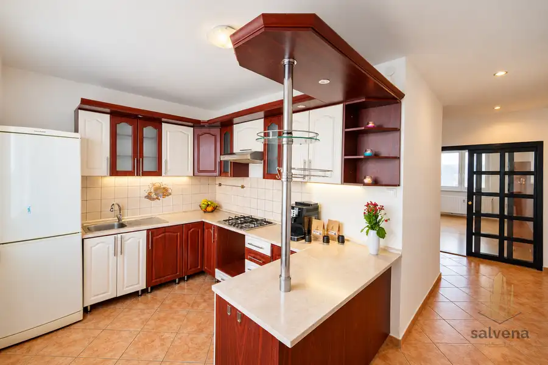
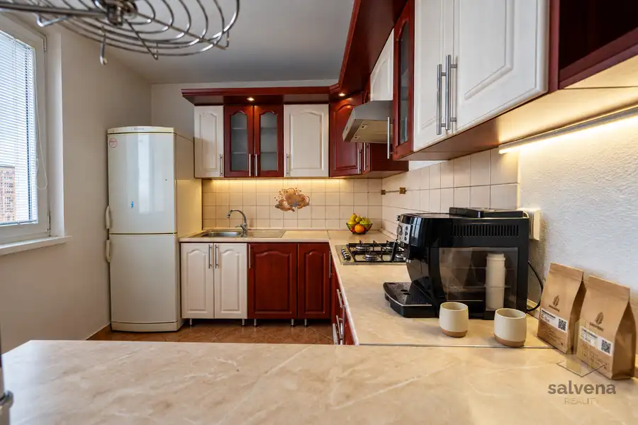
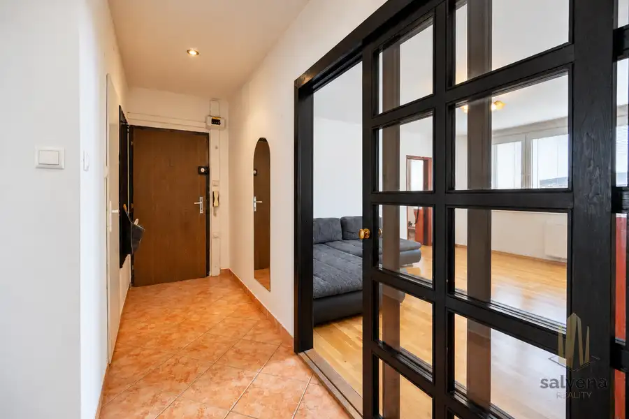
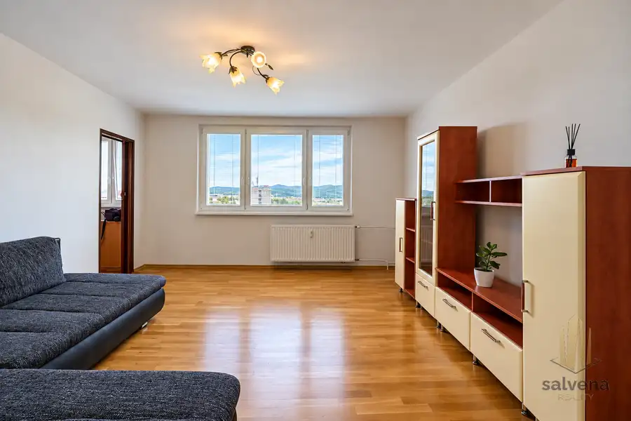
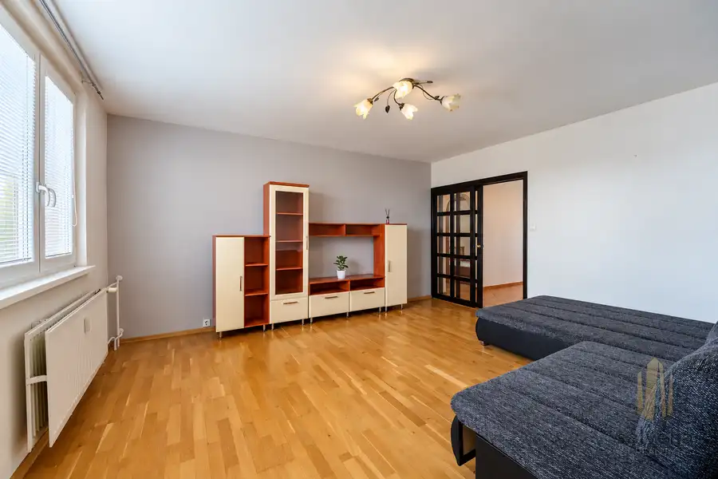
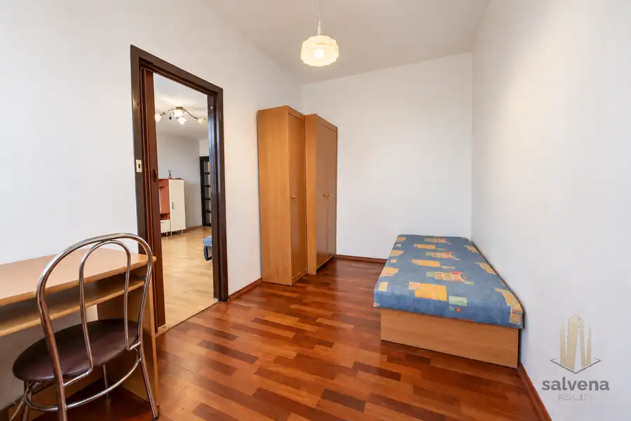

4-izbový byt s výhľadom a priestorom pre vlastné predstavy – Važecká, Prešov
Prešov






- Dispozícia4-izbový
- Plocha77.61 m²
- Poschodie8. z 8
- StavČiastočná rekonštrukcia
- VlastníctvoOsobné
- Energetická triedaB
O nehnuteľnosti
Nie každý byt musí byť zariadený podľa vkusu niekoho iného. Niekedy je najväčšou výhodou práve možnosť vytvoriť si nový domov od základov presne podľa seba.Salvena Reality Vám Exluzívne ponúka na predaj priestranný 4-izbový byt s výmerou 78 m² na Važeckej ulici v obľúbenej prešovskej lokalite Šváby. Nachádza sa na najvyššom, ôsmom poschodí, vďaka čomu ponúka príjemný výhľad, dostatok svetla a najmä pokoj bez susedov nad hlavou.Dispozícia bytu je vhodná pre rodinu aj pre každého, kto potrebuje viac samostatných miestností. Tvoria ju tri nepriechodné izby, obývacia izba, samostatná kuchyňa, kúpeľňa spojená s WC, praktický šatník a vstupná chodba. K bytu patrí aj loggia a nadštandardne veľká pivnica s výmerou približne 7 m².Byt je neobývaný a pripravený na rekonštrukciu. Novému majiteľovi tak ponúka možnosť zvoliť si vlastnú dispozíciu, materiály aj štýl interiéru bez toho, aby platil za úpravy, ktoré by mu nemuseli vyhovovať. Plastové okná už majú niekoľko rokov a znížené sadrokartónové stropy sa nachádzajú iba v časti bytu.Veľkou výhodou je samotný bytový dom. V rokoch 2025 až 2026 prešiel rozsiahlou obnovou fasády, strechy, balkónov, spoločných priestorov, pivníc a stúpačiek. Dom je zateplený, napojený na všetky inžinierske siete a jeho správu zabezpečuje SPRAVBYT.Technické Parametre:Typ a výmera: 4-izbový byt s úžitkovou plochou približne 78 m²Podlažie: 8. poschodie z 8Príslušenstvo: loggia, šatník a pivnica s výmerou približne 7 m²Dispozícia: tri nepriechodné izby, obývacia izba, samostatná kuchyňa a kúpeľňa s WCTechnický stav bytu: plastové okná, čiastočne znížené SDK stropy, byt určený na modernizáciuBytový dom: zateplený a rozsiahlo obnovený v rokoch 2025 až 2026, správca SPRAVBYTMesačné náklady boli pri piatich osobách nastavené približne na 250 € správcovi, 67 € za elektrinu a 15 € za plyn.Važecká ulica ponúka kompletnú občiansku vybavenosť pre každodenný rodinný život. V blízkosti sa nachádza škola, materská škola, obchody, služby, knižnica, PKO aj Aquapark Delňa. Lokalita zároveň poskytuje dobré spojenie s ostatnými časťami Prešova.Ak hľadáte veľký rodinný byt s praktickou dispozíciou, výhľadom a možnosťou vytvoriť si interiér podľa vlastných predstáv, táto ponuka si zaslúži Vašu pozornosť.Pre viac informácií alebo dohodnutie obhliadky ma neváhajte kontaktovať.Tomáš Amrich 0917 993 339tomas.amrich@salvena.sk
Parametre
- Cena vrátane energií
- Nie
- Doprava
- MHD
- Druh
- 4 izbový byt
- Dátum zverejnenia
- 01. 10. 2026
- Energetický certifikát budovy
- B
- Energie
- 320
- Podlažie
- 8
- Počet izieb / miestností
- 4
- Počet lodžií
- 1
- Počet nadzemných podlaží
- 8
- Počet pivníc
- 1
- Počet spální
- 1
- Príprava teplej vody
- Súbežne s ÚK
- Rok kolaudácie
- 1987
- Rok poslednej rekonštrukcie
- 2004
- Rok výstavby
- 1987
- Stav nehnuteľnosti
- Čiastočná rekonštrukcia
- Telekomunikácie
- Optická sieť
- Typ
- Predaj
- Typ konštrukcie
- Panelová
- Umiestnenie
- Posledné podlažie
- Vlastníctvo
- Osobné
- Vybavenie
- Lodžia, Pivnica, Verejné parkovanie, Výťah, Detské ihrisko
- Vykurovanie
- Ústredné
- Zariadenie
- Nezariadené
- Zdroj tepla
- Teplo z kotolne
- Úžitková plocha
- 77.61 m²